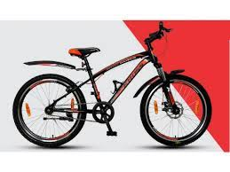

case study between wolframe and mobile net

output on mobilenet: cycle
output on wolframe: splash guard

output on mobilenet:pencil
output on wolframe:pencil
output on mobilenet:mug
output on wolframe:mug
Result: mobilenet is more accurate than wolframe